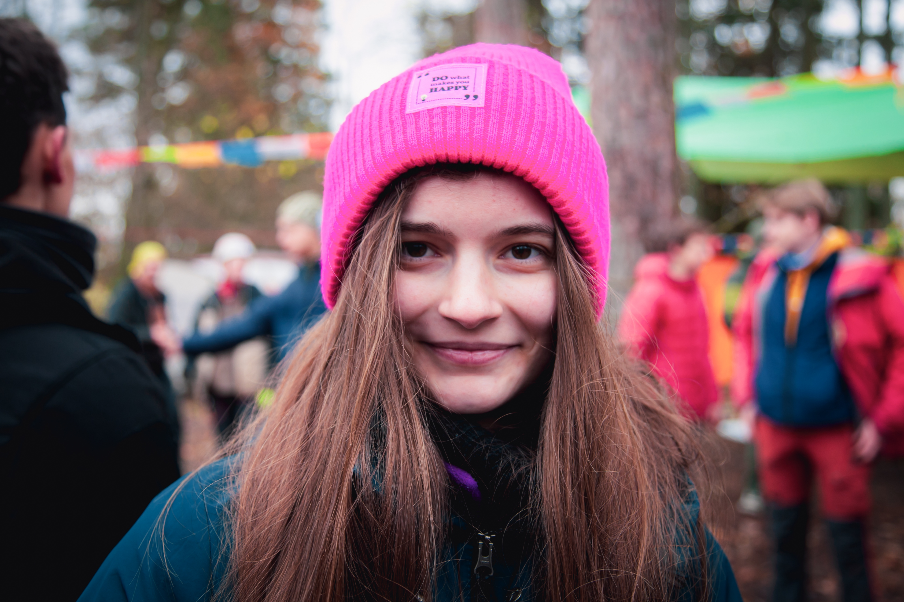

Портретная фотография
Портретная фотография — жанр, в котором главным объектом изображения становится человек. Его задача — не просто запечатлеть внешность, но и передать характер, настроение и индивидуальность модели.
Портреты могут быть постановочными или естественными, студийными или уличными. Фотограф уделяет особое внимание выражению лица, взгляду, позе, освещению и фону.
Для портретной съёмки часто используют открытую диафрагму, позволяющую размыть задний план и сосредоточить внимание зрителя на человеке. Однако выразительный портрет можно создать и без размытия, включив окружающую обстановку в историю снимка.